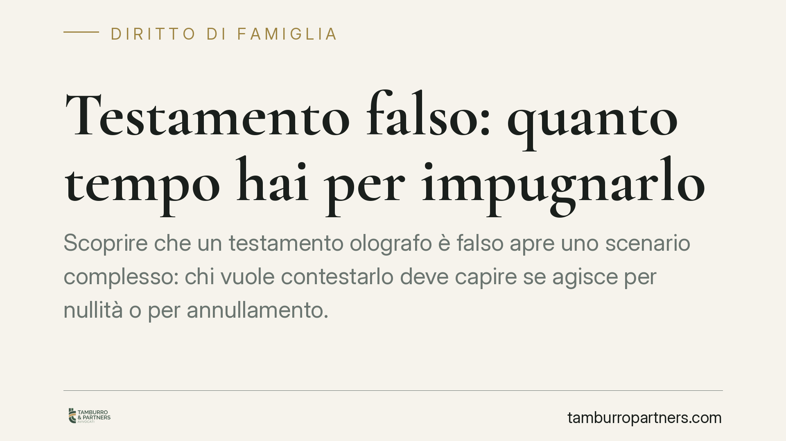

Testamento falso: quanto tempo hai per impugnarlo
Scoprire che un testamento olografo è falso apre uno scenario complesso: chi vuole contestarlo deve capire se agisce per nullità o per annullamento. La differenza non è formale, perché incide sul tempo a disposizione. Per la falsità l'azione non ha scadenza; per altri vizi il termine è di cinque anni. Vediamo perché questa distinzione cambia tutto.

Il caso: falsità e termini per agire
Capita che, aperta la successione, uno o più eredi legittimi nutrano dubbi sul testamento olografo (quello scritto a mano dal testatore). La firma sembra diversa, la grafia non convince, il documento compare in circostanze poco chiare.
La domanda pratica è sempre la stessa: quanto tempo ho per contestarlo? La risposta dipende dal tipo di vizio che si intende far valere. E qui si gioca la partita.
Inquadramento normativo
Il testamento olografo è disciplinato dall'art. 602 cod. civ., che richiede tre requisiti: scrittura autografa, data e sottoscrizione del testatore. La mancanza di questi elementi produce conseguenze diverse a seconda della gravità.
Quando il testamento è falso – cioè non proviene dalla mano del testatore, perché scritto o firmato da altri – si tratta di un vizio radicale. La giurisprudenza lo inquadra come causa di nullità. E la nullità, per l'art. 1422 cod. civ., è imprescrittibile: l'azione può essere proposta senza limiti di tempo. Restano fatti salvi gli effetti dell'usucapione e della prescrizione delle azioni di ripetizione, ma il diritto di far dichiarare la nullità non si estingue.
Diverso è il caso dell'annullabilità, prevista dall'art. 606 cod. civ. per i difetti di forma diversi dalla mancata autografia o sottoscrizione: ad esempio un vizio sulla data. In questa ipotesi l'azione si prescrive in cinque anni dal giorno in cui è stata data esecuzione alle disposizioni testamentarie.
Attenzione a un dettaglio spesso trascurato. Per la falsità dell'olografo, le Sezioni Unite della Cassazione hanno chiarito che chi contesta l'autenticità non deve limitarsi a disconoscere la scrittura, ma deve proporre un'azione vera e propria – la querela di falso o un'azione di accertamento negativo – assumendo l'onere di provare la non autenticità. Non basta, cioè, negare: occorre dimostrare.
Cosa cambia per chi vuole impugnare
La distinzione tra nullità e annullabilità ha effetti concreti.
Se il testamento è falso, il tempo non è un ostacolo formale: l'azione resta esperibile anche a distanza di anni. Questo tutela gli eredi legittimi – coniuge, figli, genitori – che scoprano tardivamente la falsità.
Ma non bisogna abbassare la guardia. Il decorso del tempo può comunque compromettere la posizione di chi contesta: i beni possono essere venduti a terzi in buona fede, possono maturare usucapioni, le prove documentali e testimoniali possono deteriorarsi. Un'azione imprescrittibile sulla carta può diventare inutile nei fatti.
Sul piano probatorio, poi, l'onere grava su chi impugna. Serve quasi sempre una perizia grafologica e una ricostruzione accurata delle circostanze in cui il documento è comparso. Non è un percorso da improvvisare.
Per i vizi meramente formali, invece, il termine di cinque anni è rigido. Superato quello, la disposizione si consolida e non è più attaccabile per quel motivo.
Cosa fare in concreto
- Fai valutare subito il documento da un legale e, se necessario, da un grafologo: capire se si tratta di falsità o di semplice vizio di forma orienta l'intera strategia e i termini applicabili.
- Raccogli e conserva le prove senza attendere: scritti di comparazione, corrispondenza, testimonianze e ogni elemento utile a dimostrare la non autenticità.
- Non confidare sull'imprescrittibilità: agisci comunque con tempestività per evitare che vendite a terzi o usucapioni rendano vana la tutela.
- Verifica il tipo di azione corretta: la contestazione della falsità richiede una domanda giudiziale strutturata, non un semplice disconoscimento.
- Consigliamo di attivare un accertamento tecnico preventivo quando il rischio di dispersione delle prove è concreto, per fissare gli elementi utili prima del giudizio.
La scelta tra nullità e annullamento, e i relativi termini, non è un tecnicismo: definisce se e come è possibile difendere i propri diritti successori. Una qualificazione errata può precludere l'azione o farne perdere l'efficacia.
---
Contributo informativo a cura di Tamburro & Partners – Avv. Giuseppe Tamburro. Non costituisce parere legale.
Ogni famiglia ha il suo equilibrio.
Separazione, divorzio, affidamento, assegno: se vuoi un confronto riservato su una specifica situazione, scrivi allo studio. Ti rispondiamo entro un giorno lavorativo.